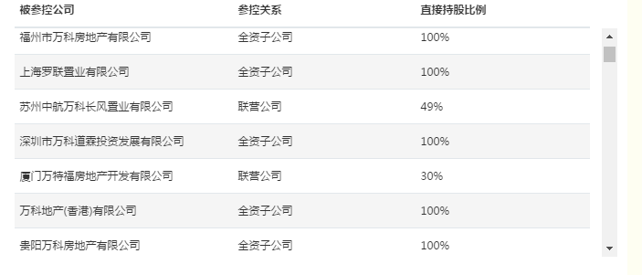

By kin
2016.10.10
效果

css：
//表头固定
.fixed_headers thead tr {
display: block;
position: relative;
}
.fixed_headers tbody {
display: block;
overflow: auto;
height: 250px;
}
//每列宽度
.fixed_headers td:nth-child(1),
.fixed_headers th:nth-child(1) {
min-width: 250px;
text-overflow:ellipsis;
white-space:nowrap;
overflow:hidden;
}
.fixed_headers td:nth-child(2),
.fixed_headers th:nth-child(2) {
min-width: 200px;
}
.fixed_headers td:nth-child(3),
.fixed_headers th:nth-child(3) {
min-width: 200px;
}
.fixed_headers td:nth-child(4),
.fixed_headers th:nth-child(4) {
min-width: 200px;
}
.fixed_headers td:nth-child(5),
.fixed_headers th:nth-child(5) {
min-width: 200px;
}
.fixed_headers td:nth-child(6),
.fixed_headers th:nth-child(6) {
min-width: 200px;
}
.fixed_headers td:nth-child(7),
.fixed_headers th:nth-child(7) {
min-width: 200px;
}
.fixed_headers td:nth-child(8),
.fixed_headers th:nth-child(8) {
min-width: 200px;
}
html:
<table class="table table-hover coma-base-table fixed_headers">
<thead>
<tr style="white-space: nowrap">
<th style="font-weight: bold;">被参控公司</th>
<th style="font-weight: bold;">参控关系</th>
<th style="font-weight: bold;">直接持股比例</th>
</tr>
</thead>
<tbody>
..........
</tbody>
</table>